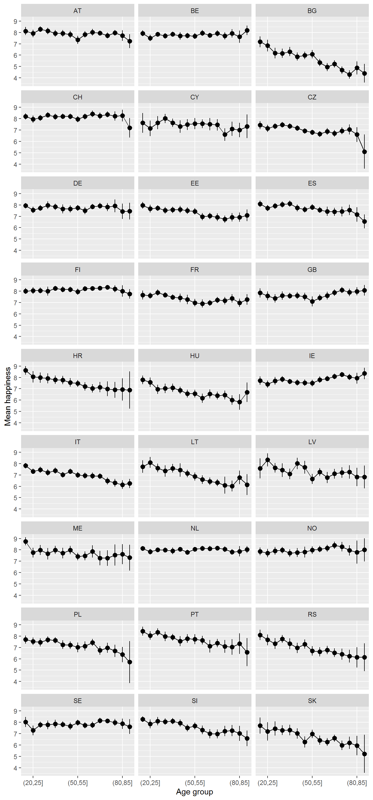
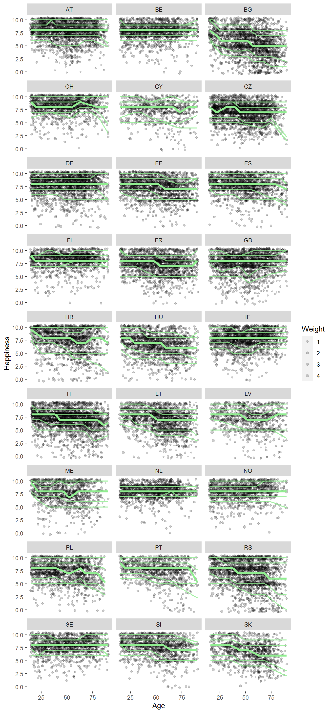

This is work in progress, in response to David G. Blanchflower’s paper Is Happiness U-shaped Everywhere?.
I’m curious to know:
Load some packages:
library(tidyverse)## -- Attaching packages ----------------------------------------- tidyverse 1.3.0 --## v ggplot2 3.3.2 v purrr 0.3.4
## v tibble 3.0.3 v dplyr 1.0.0
## v tidyr 1.1.0 v stringr 1.4.0
## v readr 1.3.1 v forcats 0.5.0## -- Conflicts -------------------------------------------- tidyverse_conflicts() --
## x dplyr::filter() masks stats::filter()
## x dplyr::lag() masks stats::lag()library(haven)
library(srvyr)##
## Attaching package: 'srvyr'## The following object is masked from 'package:stats':
##
## filterlibrary(quantreg)## Loading required package: SparseM##
## Attaching package: 'SparseM'## The following object is masked from 'package:base':
##
## backsolvelibrary(survey)## Loading required package: grid## Loading required package: Matrix##
## Attaching package: 'Matrix'## The following objects are masked from 'package:tidyr':
##
## expand, pack, unpack## Loading required package: survival##
## Attaching package: 'survival'## The following object is masked from 'package:quantreg':
##
## untangle.specials##
## Attaching package: 'survey'## The following object is masked from 'package:graphics':
##
## dotchartRead in the ESS data, integrated file, edition 2.0 round 9:
ESS9e02 <- read_sav("ESS9e02.sav")Have a look:
View(ESS9e02)The variable docs are available here.
happy: “Taking all things together, how happy would you say you are?”gndr: Gender (only male or female)agea: Age in yearscntry: Country of respondentpspwght: Post-stratification weights (Docs)dat <- ESS9e02 %>%
select(happy,
gndr,
agea,
cntry,
pspwght)Let’s see how many observations there are by country.
raw_obs <- dat %>%
group_by(cntry) %>%
summarise(n_raw = n())## `summarise()` ungrouping output (override with `.groups` argument)Make a survey object, using the srvyr wrapper around the survey package:
dat_svy <- dat %>%
as_survey_design(weights = pspwght)Let’s first plot the mean happiness by age group (weighted appropriately), to get a sense of what might be going on.
First, how does age look?
summary(dat$agea)## Min. 1st Qu. Median Mean 3rd Qu. Max. NA's
## 15.00 36.00 52.00 51.13 66.00 90.00 222As a first try, let’s group into fives:
table(cut(dat$agea, seq(15,90,5), include.lowest = T))##
## [15,20] (20,25] (25,30] (30,35] (35,40] (40,45] (45,50] (50,55] (55,60] (60,65]
## 2589 2486 2931 3143 3580 3583 3958 4160 4181 4135
## (65,70] (70,75] (75,80] (80,85] (85,90]
## 4145 3198 2508 1415 852Looks like it should be enough.
mean_happy <- dat_svy %>%
mutate(age_grp = cut(agea, seq(15,90,5))) %>%
select(age_grp, cntry, happy) %>%
na.omit() %>%
group_by(cntry, age_grp) %>%
summarise(Happiness = survey_mean(happy))
mean_happy## # A tibble: 405 x 4
## # Groups: cntry [27]
## cntry age_grp Happiness Happiness_se
## <chr+lbl> <fct> <dbl> <dbl>
## 1 AT [Austria] (40,45] 7.92 0.151
## 2 AT [Austria] (65,70] 7.95 0.115
## 3 AT [Austria] (35,40] 7.92 0.155
## 4 AT [Austria] (60,65] 8.02 0.153
## 5 AT [Austria] (70,75] 7.74 0.131
## 6 AT [Austria] (55,60] 7.84 0.144
## 7 AT [Austria] (20,25] 7.92 0.169
## 8 AT [Austria] (45,50] 7.83 0.165
## 9 AT [Austria] (75,80] 7.98 0.125
## 10 AT [Austria] (25,30] 8.28 0.128
## # ... with 395 more rowsage_group_names <- levels(mean_happy$age_grp)
age_group_names## [1] "(15,20]" "(20,25]" "(25,30]" "(30,35]" "(35,40]" "(40,45]" "(45,50]"
## [8] "(50,55]" "(55,60]" "(60,65]" "(65,70]" "(70,75]" "(75,80]" "(80,85]"
## [15] "(85,90]"whichLabels <- c(2,
floor(length(age_group_names)/2 + 1),
length(age_group_names) - 1)mean_happy %>%
ggplot(aes(x = age_grp, y = Happiness,
ymin = Happiness - 1.96*Happiness_se,
ymax = Happiness + 1.96*Happiness_se)) +
geom_pointrange() +
geom_line(group = 1) +
scale_x_discrete(breaks = age_group_names[whichLabels]) +
facet_wrap(vars(cntry), ncol = 3) +
labs(x = "Age group", y = "Mean happiness")
dat %>%
select(agea, happy, cntry) %>%
na.omit %>%
ggplot(aes(x = agea, y = happy)) +
geom_jitter(size = .8, alpha = 0.2) +
geom_quantile(quantiles = c(.5),
method = "rqss",
formula = y ~ qss(x, lambda = 8),
size = 1.5,
alpha = 0.9) +
geom_quantile(quantiles = c(.2, .8),
method = "rqss",
formula = y ~ qss(x, lambda = 8),
size = .8,
alpha = 1) +
facet_wrap(vars(cntry), ncol = 3) +
labs(x = "Age", y = "Happiness") +
scale_x_continuous() +
scale_y_continuous() +
theme(panel.grid.major = element_blank(),
panel.grid.minor = element_blank(),
panel.background = element_rect(fill = "white"))## Warning in rq.fit.sfn(x, y, tau = tau, rhs = rhs, control = control, ...): tiny diagonals replaced with Inf when calling blkfct
To get us started, let’s fit a model to GB data.
gb_mod <- dat_svy %>%
filter(cntry == "GB") %>%
svyglm(happy ~ agea + I(agea^2), design = .)
summary(gb_mod)##
## Call:
## svyglm(formula = happy ~ agea + I(agea^2), design = .)
##
## Survey design:
## Called via srvyr
##
## Coefficients:
## Estimate Std. Error t value Pr(>|t|)
## (Intercept) 8.1964719 0.3278999 24.997 < 2e-16 ***
## agea -0.0339935 0.0137098 -2.479 0.01323 *
## I(agea^2) 0.0003952 0.0001293 3.056 0.00227 **
## ---
## Signif. codes: 0 '***' 0.001 '**' 0.01 '*' 0.05 '.' 0.1 ' ' 1
##
## (Dispersion parameter for gaussian family taken to be 3.49404)
##
## Number of Fisher Scoring iterations: 2The plan is: